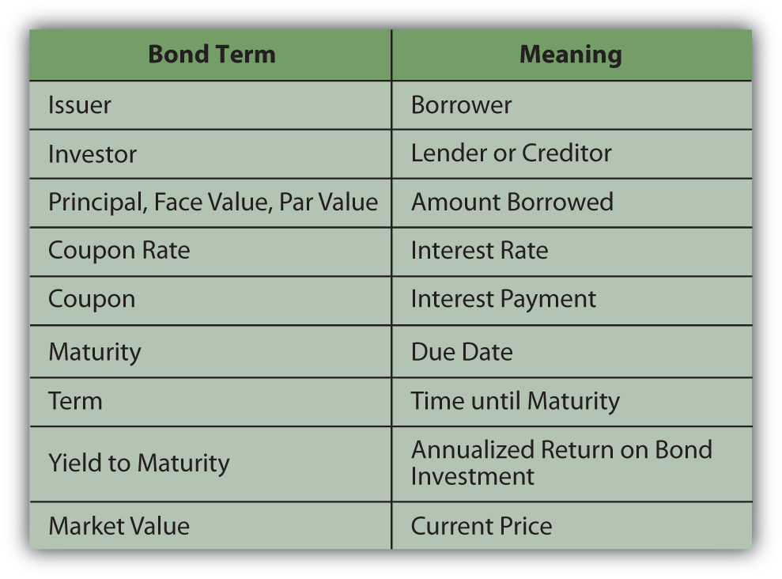
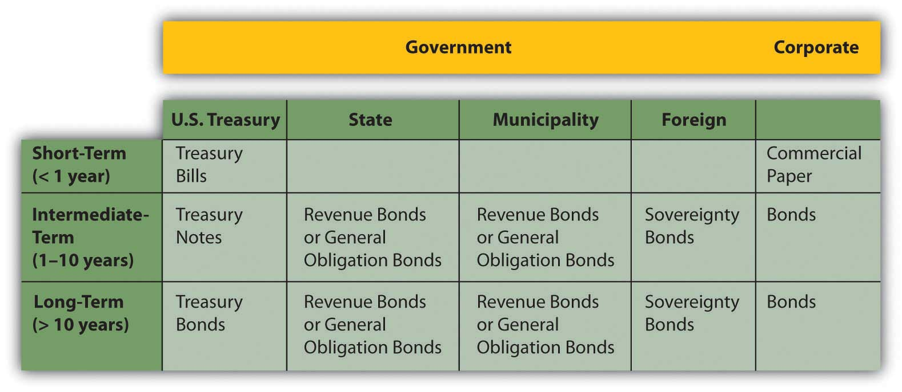
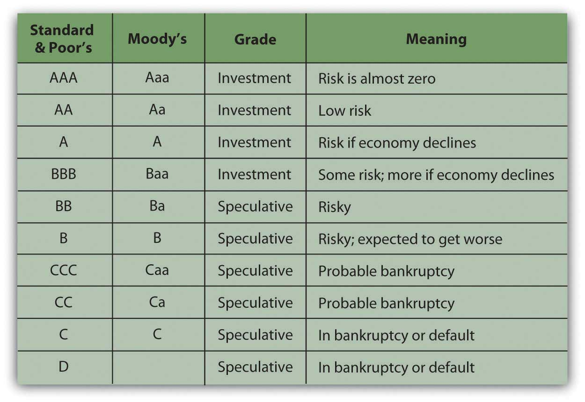

Bonds are a relatively old form of financing. Formalized debt arrangements long preceded corporate structure and the idea of equity (stock) as we know it. Venice issued the first known government bonds of the modern era in 1157,Isadore Barmash, The Self-Made Man (Washington, DC: Beard Books, 2003), 55. while private bonds are cited in British records going back to the thirteenth century.George Burton Adams, The Constitutional History of England (London: H. Holt, 1921), 93. Venice issued bonds to raise funds to finance a Crusade against Constantinople, which included expansion of a shipyard attached to the Venetian Arsenal. (Go to http://en.wikipedia.org/wiki/Venetian_Arsenal to view images.)
In addition to financing government projects, bonds are used by corporations to capitalize growth. Bonds are also a legal arrangement, couched in conditions, obligations, and consequences. As a result of their legal and financial roles, bonds carry a quaint and particular vocabulary. Bonds come in all shapes and sizes to suit the needs of the borrowers and the demands of lenders. Figure 16.1 "Basic Bond Features" lists the descriptive terms for basic bond features.
Figure 16.1 Basic Bond Features
The couponThe interest payment on a bond, specified as a feature of the bond at issuance. is usually paid to the investor twice yearly. It is calculated as a percentage of the face valueFor a bond, the amount to be repaid to the bondholder upon redemption.—amount borrowed—so that the annual coupon = coupon rate × face value. By convention, each individual bond has a face value of $1,000. A corporation issuing a bond to raise $100 million would have to issue 100,000 individual bonds (100,000,000 divided by 1,000). If those bonds pay a 4 percent coupon, a bondholder who owns one of those bonds would receive a coupon of $40 per year (1,000 × 4%), or $20 every six months.
The coupon rateThe interest rate offered on a bond. of interest on the bond may be fixed or floating and may change. A floating rate is usually based on another interest benchmark, such as the U.S. prime rateA benchmark interest rate understood to be the rate that major banks charge corporate borrowers with the least default risk., a widely recognized benchmark of prevailing interest rates.
A zero-coupon bondA bond that has a coupon rate of zero, and therefore a coupon of zero. Its only cash flow return is the principal repayment at maturity. has a coupon rate of zero: it pays no interest and repays only the principal at maturity. A “zero” may be attractive to investors, however, because it can be purchased for much less than its face value. There are deferred coupon bondsBonds whose coupon payments are deferred until a specified time. (also called split-coupon bondsDeferred coupon bonds that pay no interest for a specified period, followed by higher-than-normal interest payments until maturity. and issued below par), which pay no interest for a specified period, followed by higher-than-normal interest payments until maturity. There are also step-up bondsA bond with a floating-rate coupon that is scheduled to increase at specified intervals. that have coupons that increase over time.
The face value, the principal amount borrowed, is paid back at maturity. If the bond is callableA bond that may be redeemed before maturity., it may be redeemed after a specified date but before maturity. A borrower typically “calls” its bonds after prevailing interest rates have fallen, making lower-cost debt available. Borrowers can borrow new, cheaper debt and pay off the older, more expensive debt. As an investor (lender), you would be paid back early, which sounds great, but because interest rates have fallen, you would have trouble finding another bond investment that would pay as high a rate of return.
A convertible bondA bond that may be converted to common stock under specific conditions. is a corporate bond that may be converted into common equity at maturity or after some specified time. If a bond were converted into stock, the bondholder would become a shareholder, assuming more of the company’s risk.
The bond may be secured by collateral, such as property or equipment, sometimes called a mortgage bondA bond secured by a specific asset such as real property or equipment.. If unsecured, or secured only by the “full faith and credit” of the borrower (the borrower’s unconditional commitment to pay principal and interest on the debt), the bond is a debentureA bond secured by only the “full faith and credit” of the borrower and not by any specific asset.. Most bonds are issued as debentures.
A bond specifies if the borrower has more than one bond issue outstanding or more than one set of lenders to repay, which establishes the bond’s seniority in relation to previously issued debt. This “pecking order” determines which lenders will be paid back first in case of default on the debt or bankruptcy. Thus, when the borrower does not meet its coupon obligations, investors holding senior debtA bond issue that has a superior claim in case of bankruptcy. as opposed to subordinated debtA bond issue that has an inferior claim in case of bankruptcy. have less risk of default.
Bonds may also come with covenantsA condition of a loan that restricts the borrower to protect the lender. or conditions on the borrower. Covenants are usually attached to corporate bonds and require the company to maintain certain performance goals during the term of the loan. Those goals are designed to lower default riskThe risk that a borrower will not be able to meet interest obligations or principal repayment. for the lender. Examples of typical covenants are
Corporations issue corporate bonds, usually with maturities of ten, twenty, or thirty years. Corporate bonds tend to be the most “customized,” with features such as callability, conversion, and covenants.
The U.S. government issues Treasury billsBonds issued by the U.S. government with a maturity of less than one year. for short-term borrowing, Treasury notesBonds issued by the U.S. government with a maturity of between one and ten years. for intermediate-term borrowing (longer than one year but less than ten years), and Treasury bondsBonds issued by the U.S. government with a maturity of more than ten years. for long-term borrowing for more than ten years. The federal government also issues Treasury Inflation-Protected Securities (TIPS)Bonds issued by the U.S. government with an adjustable face value designed to protect the bondholder against inflation risk.. TIPS pay a fixed coupon, but the principal adjusts with inflation. At maturity, you are repaid either the original principal or the inflation-adjusted principal, whichever is greater.
State and municipal governments issue revenue bonds or general obligation bonds. A revenue bondA state or municipal bond that will be repaid from revenues of the specific project it is financing. is repaid out of the revenue generated by the project that the debt is financing. For example, toll revenue may secure a debt that finances a highway. A general obligation bondA state or municipal bond secured only by the “full faith and credit” of the issuer. is backed by the state or municipal government, just as a corporate debenture is backed by the corporation.
Interest from state and municipal bondsBonds issued by a city, town or state to finance public projects. The coupon payments may, under certain circumstances, not be subject to federal income tax for the bondholder. (also called “munis”) may not be subject to federal income taxes. Also, if you live in that state or municipality, the interest may not be subject to state and local taxes. The tax exemption differs from bond to bond, so you should be sure to check before you invest. Even if the interest is not taxable, however, any gain (or loss) from the sale of the bond is taxed, so you should not think of munis as “tax-free” bonds.
Foreign corporations and governments issue bonds. You should keep in mind, however, that foreign government defaults are not uncommon. Mexico in 1994, Russia in 1998, and Argentina in 2001 are all recent examples. Foreign corporate or sovereign debt also exposes the bondholder to currency risk, as coupons and principal will be paid in the foreign currency. Figure 16.2 "Bond Issuers and Terms" shows a summary of bonds and their issuers.
Figure 16.2 Bond Issuers and Terms
The volume of capital traded in the bond markets is far greater than what is traded in the stock markets. All sorts of borrowers issue bonds: corporations; national, state and municipal governments; and government agencies. Even small towns issue bonds to finance capital expenditures such as schools, fire stations, and roads. Each kind of bond has its own market.
Private placementAn issuance of bonds through a private deal rather than through the public markets. refers to bonds that are issued in a private sale rather than through the public markets. The investors in privately placed bonds are institutional investors such as insurance companies, endowments, and pension funds.
U.S. Treasury bonds are issued to the primary market through auctions. Participants, usually dealers or institutional investors, bid for the bonds, but no one participant is allowed to buy enough shares to monopolize the secondary market. Individuals can also buy Treasuries directly from the U.S. Treasury through its online service, called TreasuryDirect (http://www.treasurydirect.gov/).TreasuryDirect, http://www.treasurydirect.gov/ (accessed June 13, 2009).
Corporate bonds are traded in over-the-counter transactions through brokers and dealers. Because the details of each bond issue may vary—maturity, coupon rate, callability, convertibility, covenants, and so on—it is hard to directly compare bond values the way stock values are compared. As a result, the corporate bond markets are less transparent to the individual investor.
To provide guidance, rating agenciesAnalysts of bond default risk that assign ratings to bonds. provide bond ratings; that is, they “grade” individual bond issues based on the likelihood of default and thus the risk to the investor. Rating agencies are independent agents that base their ratings on the financial stability of the company, its business strategy, competitive environment, outlook for the industry and the economy—any factors that may affect the company’s ability to meet coupon obligations and pay back debt at maturity.
Ratings agencies such as Fitch Ratings, A. M. Best, Moody’s, and Standard & Poor’s (S&P) are hired by large borrowers to analyze the company and rate its debt. Moody’s also rates government debt. Ratings agencies use an alphabetical system to grade bonds (shown in Figure 16.3 "Bond Ratings") based on the highest-to-lowest rankings of two well-known agencies.
Figure 16.3 Bond Ratings
A plus sign (+) following a rating indicates that it is likely to be upgraded, while a minus sign (−) following a rating indicates that it is likely to be downgraded.
Bonds rated BBB or Baa and above are considered investment grade bondsBonds rated BBB or Baa or higher and considered to carry insignificant default risk., relatively low risk and “safe” for both individual and institutional investors. Bonds rated below BBB or Baa are speculative in that they carry some default risk. These are called speculative grade bondsHigh yield bonds rated BB or Ba or lower and considered to have significant default risk., junk bondsHigh yield bonds rated BB or Ba or lower and considered to have significant default risk., or high-yield bondsBonds rated BB or Ba or lower, considered to have significant default risk.. Because they are riskier, speculative grade bonds need to offer investors a higher return or yield in order to be “priced to sell.”
Although the term “junk bonds” sounds derogatory, not all speculative grade bonds are “worthless” or are issued by “bad” companies. Bonds may receive a speculative rating if their issuers are young companies, in a highly competitive market, or capital intensive, requiring lots of operating capital. Any of those features would make it harder for a company to meet its bond obligations and thus may consign its bonds to a speculative rating. In the 1980s, for example, companies such as CNN and MCI Communications Corporation issued high-yield bonds, which became lucrative investments as the companies grew into successful corporations.
Default risk is the risk that a company won’t have enough cash to meet its interest payments and principal payment at maturity. That risk depends, in turn, on the company’s ability to generate cash, profit, and grow to remain competitive. Bond-rating agencies analyze an issuer’s default risk by studying its economic, industry, and firm-specific environments and estimate its current and future ability to satisfy its debts. The default risk analysis is similar to equity analysis, but bondholders are more concerned with cash flows—cash to pay back the bondholders—and profits rather than profits alone.
Bond ratings can determine the coupon rate the issuer must offer investors to compensate them for default risk. The higher the risk, the higher the coupon must be. Ratings agencies have been criticized recently for not being objective enough in their ratings of the corporations that hire them. Nevertheless, over the years bond ratings have proven to be a reliable guide for bond investors.
Bond features that can determine risk and return include
The U.S. government issues Treasury
State and municipal governments issue